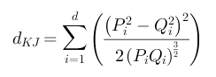

| Name | KumarJohnsonDifferenceMeasure |
| Formula |  |
| Description | Combines Symmetric Chi-Squared, arithmetic, and geometric mean divergence to form the sum of the ratio of squared differences squared to double the component product taken to the 3/2 power. |
| Category | Histogram |
| Reference | http://www.naun.org/multimedia/NAUN/m3as/mmmas-49.pdf |
| Adapter(s) | DicomImageObjectAdapter |
| Extractor(s) | VoxelHistogramExtractor |
| Descriptor(s) | VoxelHistogramDescriptor |